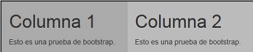

Si queremos que una página se muestre de forma diferente si la accedemos desde un dispositivo con pantalla grande, mediana, pequeña o muy pequeña podemos asignar múltiples reglas a cada columna.
Implementemos una página que muestre los datos en dos columnas y el ancho de las columnas dependa de la pantalla del dispositivo:
1er columna 2da columna
Pantalla grande: 10 unidades 2 unidades
Pantalla mediana: 8 unidades 4 unidades
Pantalla chica: 7 unidades 5 unidades
Pantalla muy chica: 6 unidades 6 unidades
Luego el código de la página queda definido:
<!DOCTYPE html>
<html>
<head>
<title>Prueba de Bootstrap</title>
<link href="css/bootstrap.min.css" rel="stylesheet">
<meta name="viewport" content="width=device-width, initial-scale=1">
</head>
<body>
<div class="container">
<div class="row">
<div class="col-lg-10 col-md-8 col-sm-7 col-xs-6" style="background-color:#aaa">
<h1>Columna 1</h1>
<p>Esto es una prueba de bootstrap.</p>
</div>
<div class="col-lg-2 col-md-4 col-sm-5 col-xs-6" style="background-color:#bbb">
<h1>Columna 2</h1>
<p>Esto es una prueba de bootstrap.</p>
</div>
</div>
</div>
</body>
</html>
Es decir podemos asignar múltiples reglas a un div de una columna, actuará el que corresponde dependiendo del ancho del dispositivo. Por ejemplo si ejecutamos este ejemplo y comenzamos a reducir el ancho del navegador podremos ver como se redimensionan los anchos de las columnas a medida que reducimos el ancho del navegador.
En un dispositivo grande:
En un dispositivo mediano:
En un dispositivo pequeño:
En un dispositivo muy pequeño:
En este caso tengamos en cuenta que nunca colapsan las columnas ya que hemos definido la regla col-xs-*